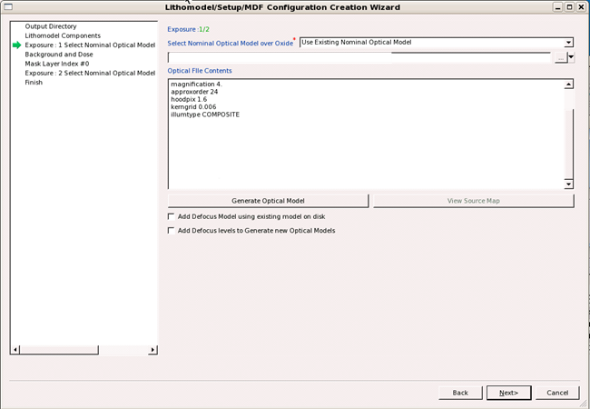
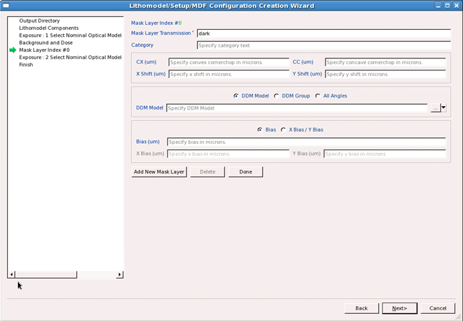
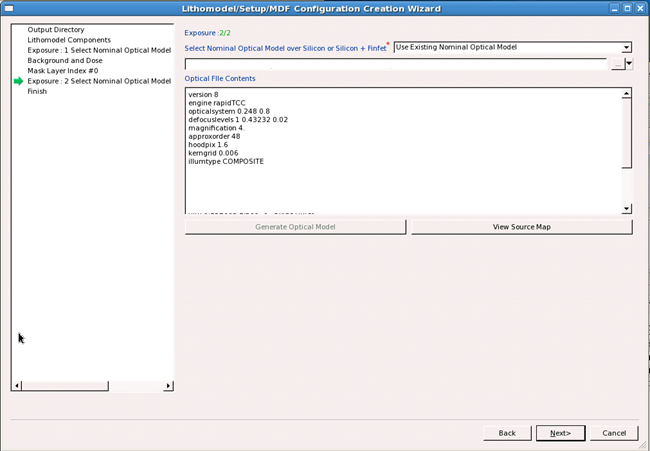

Topo model
calibration typically requires at least two optical models, and
may use more optical models depending on your configuration.
Procedure
- In the Exposure 1: Select Nominal Optical Model
page, set the oxide optical model.
If
you have an optical model file already generated, select “Use Existing
Nominal Optical Model” and select it using the file navigator.
If
you have only the Optical file available without the generated files, select
“Generate Using Existing Optical File,” then navigate to the Optical file.
Experienced
users who are familiar with the Optical Model File Format can select
“Generate Using New Optical File” and type in the active text field.
If
you do not have an optical model to load, select “Generate Using Optical
Model Tool” and fill in the tabs using the GUI that appears.
The optical model appears in the
viewing area.
Figure 1. Lithomodel Creation Wizard, Optical Model
Selection Page
- In the
Background and Dose page, accept the default values unless you know
your background and dose are different.
- In the Mask Layer Index page, accept the default
values unless your mask configuration has additional features such
as cornerchop bias.
Note: DDM
models are not used in topo modeling.
Figure 2. Lithomodel Creation Wizard, Mask Specification Page

- In the Exposure 2: Select Nominal Optical
Model page, select the silicon optical or silicon and FinFET model
using methods similar to Step 1
Figure 3. Lithomodel Creation Wizard, Second Optical Model Selection
Page
- If you loaded or selected a topo model with
three exposures in the task “Creating a Topo-Enabled Litho Model (Part 1: Resist and Topo)”, load or define the model for the transitional optical model,
similar to “1”.
- On the
Finish page, ensure that Activate Resulting Lithomodel and Import
Lithomodel to Database are both selected, then click Finish.
Results
The new litho model is added to the Calibre nmModelflow database.